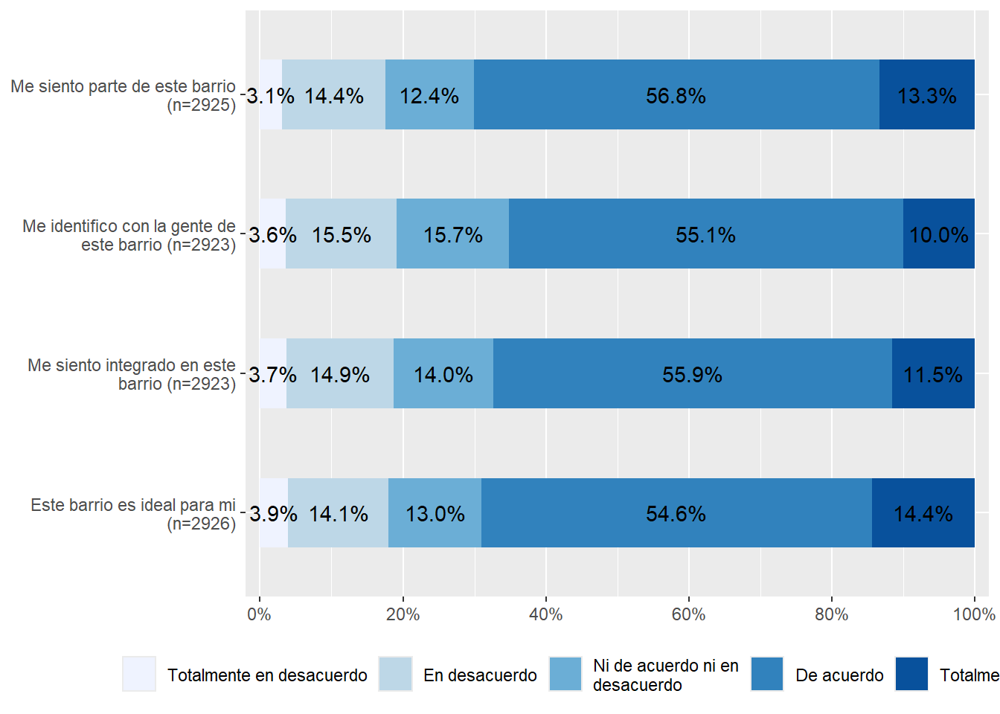
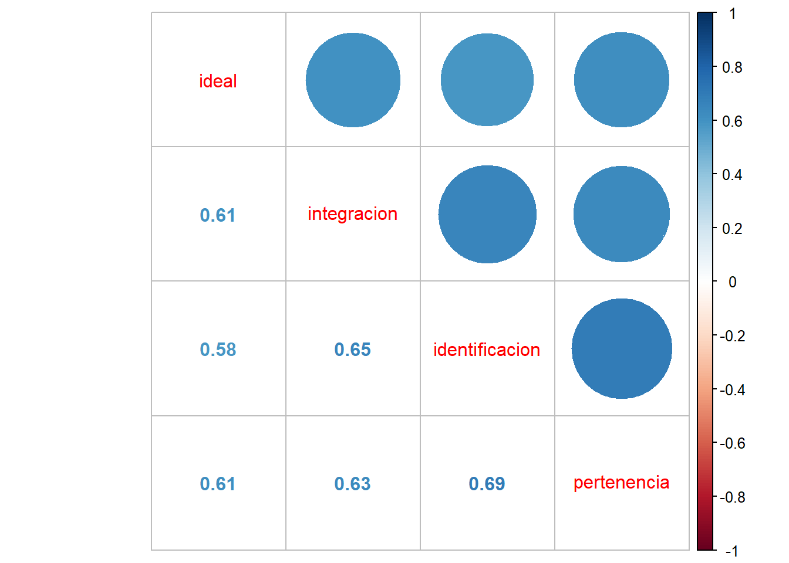
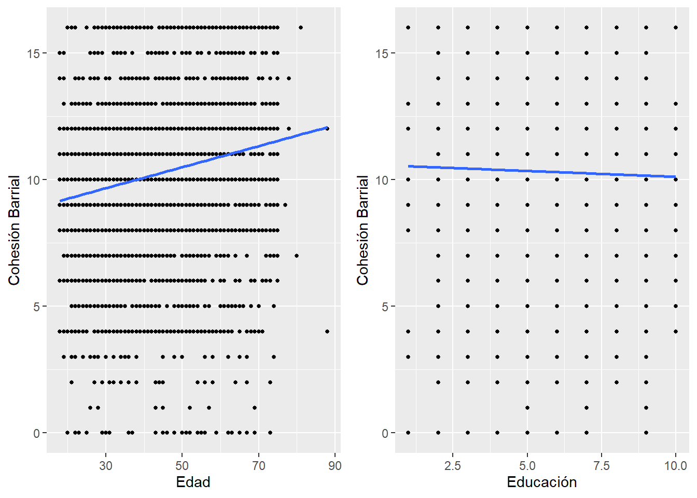
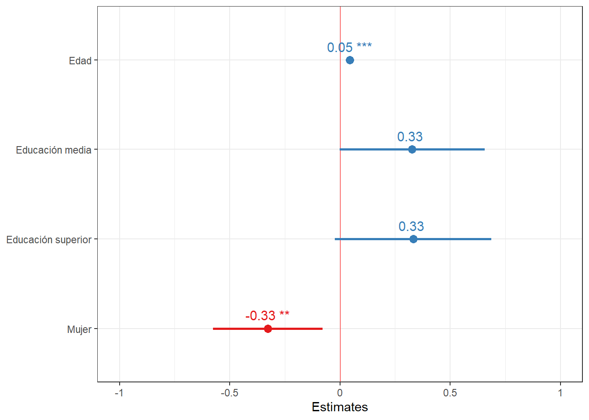

pacman::p_load(dplyr,haven, car, sjmisc, sjPlot, sjlabelled, stargazer, kableExtra, corrplot, texreg, ggplot2, ggpubr, psych)Práctico 7. Regresión lineal I
Metodología Cuantitativa Avanzada - Magíster en Ciencias Sociales
Presentación
Objetivo de la práctica
El desarrollo de esta guía tiene por objetivo revisar algunos procedimientos para la estimación de regresiones lineales y múltiples en R.
Por temas de orden y reproducibilidad, en este curso hemos separado en dos momentos el trabajo con datos, y dos archivos de código correspondientes.
Antecedentes de los datos a utilizar
Cohesión barrial con elsoc 2016.
Análisis
1. Librerías principales (de R) a utilizar en el análisis
2. Cargar base de datos
Ajustar espacio de trabajo
Previo a la carga de nuestra base de datos, se recomienda ejecutar los siguientes comandos:
rm(list=ls()) # borrar todos los objetos en el espacio de trabajo
options(scipen=999) # valores sin notación científicaLa función rm(list=ls()) permite comenzar con un espacio de trabajo (environment) vacío y sin otros objetos. Así también, la función options(scipen=999) desactiva la notación científica, es decir, veremos los valores numéricos con todos sus decimales.
Datos
#cargamos la base de datos desde internet
load(url("https://dataverse.harvard.edu/api/access/datafile/7245118")) #Cargar base de datosRealizamos un chequeo básico de la lectura de datos: nombres de las variables y tamaño de la base en términos de casos y variables (en este ejemplo, 18035, 750 ).
dim(elsoc_long_2016_2022.2) # dimension de la base[1] 18035 7503. Selección de variables a utilizar
Este paso consiste en crear un subset reducido de datos que contenga solo las variables de interés. Para ello lo más fácil es revisar el libro de códigos de cada base de datos. Además filtramos por la ola 1 para trabajar solo con datos del 2016.
proc_data <- elsoc_long_2016_2022.2 %>% filter(ola=="1") %>%
select(t02_01, # Este barrio es ideal para mi
t02_02, # Me siento incluido en este barrio
t02_03, # Me identifico con la gente de este barrio
t02_04, # Este barrio es parte de mi
m01,# nivel educacional
m0_sexo,# sexo
m0_edad# edad
)
# Comprobar
names(proc_data)[1] "t02_01" "t02_02" "t02_03" "t02_04" "m01" "m0_sexo" "m0_edad"Mediante el comando get_label obtenemos el atributo label de las variables.
sjlabelled::get_label(proc_data) t02_01
"Grado de acuerdo: Este es el barrio ideal para mi"
t02_02
"Grado de acuerdo: Me siento integrado/a en este barrio"
t02_03
"Grado de acuerdo: Me identifico con la gente de este barrio"
t02_04
"Grado de acuerdo: Este barrio es parte de mi"
m01
"Nivel educacional"
m0_sexo
"Sexo del entrevistado"
m0_edad
"Edad del entrevistado" Podemos ver que son largas o con códigos poco informativos, por lo tanto, es necesario cambiarlas por etiquetas más cortas y de fácil identificación.
Procesamiento de variables
Para el procesamiento de cada variable se seguirá el siguiente flujo de trabajo:
- Descriptivo general
- Recodificación: de casos perdidos y otros valores (en caso necesario)
- Etiquetado: cambio de nombres de variables y valores (en caso necesario)
- Otros ajustes
Y se recomienda también un descriptivo final para revisar que el procesamiento de cada variable está ok.
cohesión barrial
a. Descriptivo
Para los descriptivos se utilizará la función frq, de la librería sjmisc:
frq(proc_data$t02_01)Grado de acuerdo: Este es el barrio ideal para mi (x) <numeric>
# total N=2927 valid N=2927 mean=3.31 sd=16.51
Value | Label | N | Raw % | Valid % | Cum. %
-------------------------------------------------------------------------------
-999 | No Responde | 0 | 0.00 | 0.00 | 0.00
-888 | No Sabe | 1 | 0.03 | 0.03 | 0.03
-777 | Valor perdido por error tecnico | 0 | 0.00 | 0.00 | 0.03
-666 | Valor perdido por encuesta incompleta | 0 | 0.00 | 0.00 | 0.03
1 | Totalmente en desacuerdo | 114 | 3.89 | 3.89 | 3.93
2 | En desacuerdo | 413 | 14.11 | 14.11 | 18.04
3 | Ni de acuerdo ni en desacuerdo | 379 | 12.95 | 12.95 | 30.99
4 | De acuerdo | 1599 | 54.63 | 54.63 | 85.62
5 | Totalmente de acuerdo | 421 | 14.38 | 14.38 | 100.00
<NA> | <NA> | 0 | 0.00 | <NA> | <NA>En esta variable vemos valores asociados a la opción “No contesta” (-999) y “No sabe” (-888), (-777) y (-666) que corresponde definirlos como casos perdidos (en el caso de R, como casos NA). El resto de los valores y etiquetas se encuentran en un orden correcto. Sin embargo, si queremos construir una escala, lo mejor es dejar los valores de 0 a 4
b. Recodificación
Después de revisar el libro de códigos, no hay variables en que los valores negativos representen alguna otra característica, así que podemos usar set_na
proc_data <- proc_data %>% set_na(., na = c(-999, -888, -777, -666))frq(proc_data$t02_01)Grado de acuerdo: Este es el barrio ideal para mi (x) <numeric>
# total N=2927 valid N=2926 mean=3.62 sd=1.02
Value | Label | N | Raw % | Valid % | Cum. %
------------------------------------------------------------------------
1 | Totalmente en desacuerdo | 114 | 3.89 | 3.90 | 3.90
2 | En desacuerdo | 413 | 14.11 | 14.11 | 18.01
3 | Ni de acuerdo ni en desacuerdo | 379 | 12.95 | 12.95 | 30.96
4 | De acuerdo | 1599 | 54.63 | 54.65 | 85.61
5 | Totalmente de acuerdo | 421 | 14.38 | 14.39 | 100.00
<NA> | <NA> | 1 | 0.03 | <NA> | <NA>Para reordenar las categorías volvemos a utilizar la función recode, de la librería car
proc_data$t02_01 <- recode(proc_data$t02_01, "1=0; 2=1; 3=2; 4=3; 5=4")
proc_data$t02_02 <- recode(proc_data$t02_02, "1=0; 2=1; 3=2; 4=3; 5=4")
proc_data$t02_03 <- recode(proc_data$t02_03, "1=0; 2=1; 3=2; 4=3; 5=4")
proc_data$t02_04 <- recode(proc_data$t02_04, "1=0; 2=1; 3=2; 4=3; 5=4")c - Etiquetado
Vamos a dar un nombre más sustantivo a las variables con la función rename, de la librería dplyr:
proc_data <- proc_data %>% rename("ideal"=t02_01,
"integracion"=t02_02,
"identificacion"=t02_03,
"pertenencia"=t02_04)Además de cambiar el nombre, queremos cambiar las etiquetas de las variables.
proc_data$ideal <- set_label(x = proc_data$ideal,label = "Este barrio es ideal para mi")
get_label(proc_data$ideal)[1] "Este barrio es ideal para mi"proc_data$integracion <- set_label(x = proc_data$integracion, label = "Me siento integrado en este barrio")
get_label(proc_data$integracion)[1] "Me siento integrado en este barrio"proc_data$identificacion <- set_label(x = proc_data$identificacion, label = "Me identifico con la gente de este barrio")
get_label(proc_data$identificacion)[1] "Me identifico con la gente de este barrio"proc_data$pertenencia <- set_label(x = proc_data$pertenencia, label = "Me siento parte de este barrio")
get_label(proc_data$pertenencia)[1] "Me siento parte de este barrio"Revisión final
Nuevamente un descriptivo de cada variable para confirmar que el procesamiento está ok:
frq(proc_data$ideal)Este barrio es ideal para mi (x) <numeric>
# total N=2927 valid N=2926 mean=2.62 sd=1.02
Value | Label | N | Raw % | Valid % | Cum. %
------------------------------------------------------------------------
0 | 0 | 114 | 3.89 | 3.90 | 3.90
1 | Totalmente en desacuerdo | 413 | 14.11 | 14.11 | 18.01
2 | En desacuerdo | 379 | 12.95 | 12.95 | 30.96
3 | Ni de acuerdo ni en desacuerdo | 1599 | 54.63 | 54.65 | 85.61
4 | De acuerdo | 421 | 14.38 | 14.39 | 100.00
5 | Totalmente de acuerdo | 0 | 0.00 | 0.00 | 100.00
<NA> | <NA> | 1 | 0.03 | <NA> | <NA>frq(proc_data$integracion)Me siento integrado en este barrio (x) <numeric>
# total N=2927 valid N=2923 mean=2.57 sd=1.00
Value | Label | N | Raw % | Valid % | Cum. %
------------------------------------------------------------------------
0 | 0 | 109 | 3.72 | 3.73 | 3.73
1 | Totalmente en desacuerdo | 436 | 14.90 | 14.92 | 18.65
2 | En desacuerdo | 408 | 13.94 | 13.96 | 32.60
3 | Ni de acuerdo ni en desacuerdo | 1633 | 55.79 | 55.87 | 88.47
4 | De acuerdo | 337 | 11.51 | 11.53 | 100.00
5 | Totalmente de acuerdo | 0 | 0.00 | 0.00 | 100.00
<NA> | <NA> | 4 | 0.14 | <NA> | <NA>frq(proc_data$identificacion)Me identifico con la gente de este barrio (x) <numeric>
# total N=2927 valid N=2923 mean=2.52 sd=0.99
Value | Label | N | Raw % | Valid % | Cum. %
------------------------------------------------------------------------
0 | 0 | 106 | 3.62 | 3.63 | 3.63
1 | Totalmente en desacuerdo | 453 | 15.48 | 15.50 | 19.12
2 | En desacuerdo | 460 | 15.72 | 15.74 | 34.86
3 | Ni de acuerdo ni en desacuerdo | 1612 | 55.07 | 55.15 | 90.01
4 | De acuerdo | 292 | 9.98 | 9.99 | 100.00
5 | Totalmente de acuerdo | 0 | 0.00 | 0.00 | 100.00
<NA> | <NA> | 4 | 0.14 | <NA> | <NA>frq(proc_data$pertenencia)Me siento parte de este barrio (x) <numeric>
# total N=2927 valid N=2925 mean=2.63 sd=0.99
Value | Label | N | Raw % | Valid % | Cum. %
------------------------------------------------------------------------
0 | 0 | 91 | 3.11 | 3.11 | 3.11
1 | Totalmente en desacuerdo | 422 | 14.42 | 14.43 | 17.54
2 | En desacuerdo | 362 | 12.37 | 12.38 | 29.91
3 | Ni de acuerdo ni en desacuerdo | 1660 | 56.71 | 56.75 | 86.67
4 | De acuerdo | 390 | 13.32 | 13.33 | 100.00
5 | Totalmente de acuerdo | 0 | 0.00 | 0.00 | 100.00
<NA> | <NA> | 2 | 0.07 | <NA> | <NA>Vemos que los valores (labels) de cada categoría de las variables que recodificamos no se corresponden con el nuevo valor. Para re-etiquetar valores usamos la función set_labels, de la librería sjlabelled
proc_data$ideal <- set_labels(proc_data$ideal,
labels=c( "Totalmente en desacuerdo"=0,
"En desacuerdo"=1,
"Ni de acuerdo ni en desacuerdo"=2,
"De acuerdo"=3,
"Totalmente de acuerdo"=4))
proc_data$integracion <- set_labels(proc_data$integracion,
labels=c( "Totalmente en desacuerdo"=0,
"En desacuerdo"=1,
"Ni de acuerdo ni en desacuerdo"=2,
"De acuerdo"=3,
"Totalmente de acuerdo"=4))
proc_data$identificacion <- set_labels(proc_data$identificacion,
labels=c( "Totalmente en desacuerdo"=0,
"En desacuerdo"=1,
"Ni de acuerdo ni en desacuerdo"=2,
"De acuerdo"=3,
"Totalmente de acuerdo"=4))
proc_data$pertenencia <- set_labels(proc_data$pertenencia,
labels=c( "Totalmente en desacuerdo"=0,
"En desacuerdo"=1,
"Ni de acuerdo ni en desacuerdo"=2,
"De acuerdo"=3,
"Totalmente de acuerdo"=4))y volvemos a revisar
frq(proc_data$ideal)Este barrio es ideal para mi (x) <numeric>
# total N=2927 valid N=2926 mean=2.62 sd=1.02
Value | Label | N | Raw % | Valid % | Cum. %
------------------------------------------------------------------------
0 | Totalmente en desacuerdo | 114 | 3.89 | 3.90 | 3.90
1 | En desacuerdo | 413 | 14.11 | 14.11 | 18.01
2 | Ni de acuerdo ni en desacuerdo | 379 | 12.95 | 12.95 | 30.96
3 | De acuerdo | 1599 | 54.63 | 54.65 | 85.61
4 | Totalmente de acuerdo | 421 | 14.38 | 14.39 | 100.00
<NA> | <NA> | 1 | 0.03 | <NA> | <NA>frq(proc_data$pertenencia)Me siento parte de este barrio (x) <numeric>
# total N=2927 valid N=2925 mean=2.63 sd=0.99
Value | Label | N | Raw % | Valid % | Cum. %
------------------------------------------------------------------------
0 | Totalmente en desacuerdo | 91 | 3.11 | 3.11 | 3.11
1 | En desacuerdo | 422 | 14.42 | 14.43 | 17.54
2 | Ni de acuerdo ni en desacuerdo | 362 | 12.37 | 12.38 | 29.91
3 | De acuerdo | 1660 | 56.71 | 56.75 | 86.67
4 | Totalmente de acuerdo | 390 | 13.32 | 13.33 | 100.00
<NA> | <NA> | 2 | 0.07 | <NA> | <NA>4.2. Educación
- [
m01] = Nivel de estudios alcanzado - Entrevistado
a. Descriptivo
frq(proc_data$m01)Nivel educacional (x) <numeric>
# total N=2927 valid N=2925 mean=5.26 sd=2.20
Value | Label | N | Raw % | Valid % | Cum. %
------------------------------------------------------------------------------------
1 | Sin estudios | 37 | 1.26 | 1.26 | 1.26
2 | Educacion Basica o Preparatoria incompleta | 322 | 11.00 | 11.01 | 12.27
3 | Educacion Basica o Preparatoria completa | 297 | 10.15 | 10.15 | 22.43
4 | Educacion Media o Humanidades incompleta | 394 | 13.46 | 13.47 | 35.90
5 | Educacion Media o Humanidades completa | 857 | 29.28 | 29.30 | 65.20
6 | Tecnica Superior incompleta | 102 | 3.48 | 3.49 | 68.68
7 | Tecnica Superior completa | 381 | 13.02 | 13.03 | 81.71
8 | Universitaria incompleta | 186 | 6.35 | 6.36 | 88.07
9 | Universitaria completa | 303 | 10.35 | 10.36 | 98.43
10 | Estudios de posgrado (magister o doctorado) | 46 | 1.57 | 1.57 | 100.00
<NA> | <NA> | 2 | 0.07 | <NA> | <NA>Esta vez la vamos a dejar así
4.3. Sexo
- [
m0_sexo] = SEXO Sexo
a. Descriptivo
frq(proc_data$m0_sexo)Sexo del entrevistado (x) <numeric>
# total N=2927 valid N=2927 mean=1.60 sd=0.49
Value | Label | N | Raw % | Valid % | Cum. %
------------------------------------------------
1 | Hombre | 1163 | 39.73 | 39.73 | 39.73
2 | Mujer | 1764 | 60.27 | 60.27 | 100.00
<NA> | <NA> | 0 | 0.00 | <NA> | <NA>4.4 Edad
- [
m0_edad] = EDAD Edad.
a. Descriptivo
summary(proc_data$m0_edad) Min. 1st Qu. Median Mean 3rd Qu. Max.
18.00 33.00 46.00 46.09 58.00 88.00 Análisis descriptivo
sjmisc::descr(proc_data,
show = c("label","range", "mean", "sd", "NA.prc", "n"))%>% # Selecciona estadísticos
kable(.,"markdown") # Esto es para que se vea bien en quarto| var | label | n | NA.prc | mean | sd | range | |
|---|---|---|---|---|---|---|---|
| 1 | ideal | Este barrio es ideal para mi | 2926 | 0.0341647 | 2.615174 | 1.0202541 | 4 (0-4) |
| 3 | integracion | Me siento integrado en este barrio | 2923 | 0.1366587 | 2.565515 | 0.9993502 | 4 (0-4) |
| 2 | identificacion | Me identifico con la gente de este barrio | 2923 | 0.1366587 | 2.523777 | 0.9884856 | 4 (0-4) |
| 7 | pertenencia | Me siento parte de este barrio | 2925 | 0.0683293 | 2.627692 | 0.9878809 | 4 (0-4) |
| 4 | m01 | Nivel educacional | 2925 | 0.0683293 | 5.260513 | 2.2015019 | 9 (1-10) |
| 6 | m0_sexo | Sexo del entrevistado | 2927 | 0.0000000 | 1.602665 | 0.4894300 | 1 (1-2) |
| 5 | m0_edad | Edad del entrevistado | 2927 | 0.0000000 | 46.090878 | 15.2867983 | 70 (18-88) |
En la Tabla 1 podemos observar los descriptivos generales de la base de datos procesada que utilizamos en el práctico anterior. Contiene ya creado el índice de cohesión barrial cuya media es de 10,33
Y si queremos visualizar algo más:
proc_data %>% dplyr::select(ideal, integracion, identificacion, pertenencia) %>%
sjPlot::plot_stackfrq()+
theme(legend.position = "bottom")

Asociación de variables
Podemos ver la asociación de todas las variables, como lo muestra la ?@cor-complete
M <- cor(proc_data, use = "complete.obs") # Usar solo casos con observaciones completascorrplot.mixed(M)
o podemos ver específicamente la asociación de las variables de cohesión barrial
M2 <- cor(dplyr::select(proc_data, ideal, integracion, identificacion, pertenencia), use = "complete.obs")
corrplot.mixed(M2)

La Figura 2 muestra que la asociación de las cuatro variables de cohesión barrial es alta y positiva, según Cohen (1998). En general el tamaño de efecto varía entre 0.58 la más baja y 0.69 la más alta.
Construcción de escala
psych::alpha(dplyr::select(proc_data, ideal, integracion, identificacion, pertenencia))
Reliability analysis
Call: psych::alpha(x = dplyr::select(proc_data, ideal, integracion,
identificacion, pertenencia))
raw_alpha std.alpha G6(smc) average_r S/N ase mean sd median_r
0.87 0.87 0.84 0.63 6.8 0.0039 2.6 0.85 0.62
95% confidence boundaries
lower alpha upper
Feldt 0.86 0.87 0.88
Duhachek 0.86 0.87 0.88
Reliability if an item is dropped:
raw_alpha std.alpha G6(smc) average_r S/N alpha se var.r med.r
ideal 0.85 0.85 0.80 0.66 5.8 0.0047 0.00086 0.65
integracion 0.84 0.84 0.78 0.63 5.1 0.0053 0.00299 0.61
identificacion 0.83 0.83 0.76 0.62 4.9 0.0055 0.00015 0.61
pertenencia 0.83 0.83 0.76 0.62 4.8 0.0055 0.00121 0.61
Item statistics
n raw.r std.r r.cor r.drop mean sd
ideal 2926 0.83 0.83 0.73 0.69 2.6 1.02
integracion 2923 0.85 0.85 0.78 0.73 2.6 1.00
identificacion 2923 0.86 0.86 0.80 0.74 2.5 0.99
pertenencia 2925 0.86 0.86 0.80 0.75 2.6 0.99
Non missing response frequency for each item
0 1 2 3 4 miss
ideal 0.04 0.14 0.13 0.55 0.14 0
integracion 0.04 0.15 0.14 0.56 0.12 0
identificacion 0.04 0.15 0.16 0.55 0.10 0
pertenencia 0.03 0.14 0.12 0.57 0.13 0La consistencia interna de una posible escala entre estos cuatro ítems es de 0.87, lo que representa una alta consistencia interna. Si quitaramos alguno de estos ítems la consistencia interna solo bajaría, así que podemos construir una escala con los cuatro ítems.
proc_data <- proc_data %>%
rowwise() %>%
mutate(cohesion_barrial = sum(ideal, integracion, identificacion, pertenencia))
summary(proc_data$cohesion_barrial) Min. 1st Qu. Median Mean 3rd Qu. Max. NA's
0.00 8.00 12.00 10.33 12.00 16.00 10 Medias condicionales
Antes de avanzar desde la correlación al método de regresión es importante conocer el concepto de media condicional.
Imaginemos un juego de tacataca con dos variables: cantidad de juegos previos y puntos obtenidos en un partido. En estas variables, el promedio de puntos es 4. Es decir, si conocemos a algún individuo que pertence al grupo de “datos”, sabemos que su puntaje se encuentra probablemente cercano a 4. ¿Podemos mejorar nuestra estimación utilizando el puntaje de X? Si el sujeto nos dice que ha jugado antes 6 veces, probablemente vamos a estimar un puntaje superior de puntos, tal vez más cercano a 6.
Lo que estamos haciendo es utilizar la información que conocemos de X para dar una estimación de Y, que sea más precisa que el promedio bruto.

Mirando el gráfico de nube de puntos, sabemos que tres personas han jugado antes una vez, pero una de ellas tuvo 2 puntos, otra 3 y otra 4. Con estos datos podemos calcular la media de Y para X=1, que sería igual a 3. En otras palabras, la media condicional de Y cuando X=1 es 3. Con esto, uno podría calcular la media condicional para cada punto de X y hacer una estimación más precisa de Y. Sin embargo, este proceso todavía no nos permite generalizar más eficientemte la relación entre X e Y.
¿Cuántos puntos (Y) se obtienen según la experiencia previa de juego (X)? Esta pregunta nos conduce al cálculo de una recta que atraviese los puntos y que generalice la relación entre X e Y.
Residuos
En el gráfico anterior vemos que la línea resume la relación entre X e Y, pero claramente es una simplificación que no abarca toda la variabilidad de los datos.
Por ejemplo, para el sujeto cuya experiencia es haber jugado 1 vez y luego gana 3 puntos, esta línea predice exáctamente su puntaje basada en su experiencia. Sin embargo, el sujeto que ha jugado 3 veces y saca 6 puntos se encuentra más lejos de la línea y por lo tanto esta línea o “modelo predictivo” no representa tan bien su puntaje. A esto se refieren los residuos, que es la diferencia entre el valor predicho (o \(\widehat{Y}\)) y el observado \(Y\), siendo los valores predichos de Y los que pasan por la recta a la altura de cada valor de X. Por lo tanto, la mejor recta será aquella que minimice al máximo los residuos.

El sentido de la recta que resume de mejor manera la relación entre dos variables es que minimice la suma de todos los residuos. ¿Cómo realizar este procedimiento?
Para realizar la suma de los residuos estos se elevan al cuadrado, lo que se denomina Suma de residuos al cuadrado o \(SS_{residual}\). Se eleva al cuadrado ya que como hay residuos positivos y negativos, unos cancelarían a otros y la suma seía 0, tal como sucede en la formula de la varianza.
De la infinita cantidad de rectas que se pueden trazar, siempre hay una que tiene un valor menor de \(SS_{residual}\). Este procedimiento es el que da nombre al proceso de estimación: mínimos (residuos) cuadrados ordinarios, o OLS (Ordinary Least Squares).
¿Cómo funciona esto con nuestro ejemplo?
#Grafico x1 = ACT
graph1 <- ggplot(proc_data, aes(x = m0_edad, y = cohesion_barrial)) +
geom_point(size = 1) + # Puntos
geom_smooth(method = "lm", se = FALSE) + # Recta de regresión
labs(x = "Edad", y = "Cohesión Barrial") # Etiquetas de ejes
# Gráfico 2
graph2 <- ggplot(proc_data, aes(x = m01, y = cohesion_barrial)) +
geom_point(size = 1) +
geom_smooth(method = "lm", se = FALSE) +
labs(x = "Educación", y = "Cohesión Barrial")
ggarrange(graph1, graph2, nrow = 1) # Unir graficos
Con el gráfico anterior podemos notar que, si bien ambas variables tienen una asociación distinta con la cohesión barrial, el tamaño efecto de esta relación es distinto. Edad tiene una asociación positiva, mientras que educación tiene una asociación negativa. El tamaño de efecto de edad es ‘grande’, mientras que el tamaño de educación es casi nulo.
Regresiones
Para facilitar la interpretación de los coeficientes de regresión vamos a recodificar la variable de educación (10 categorías) en tres categorías (básica, media y universitaria).
Además, nos aseguramos que las variables categóricas estén como variables categóricas con as_factor. De esta forma nos aseguramos que la estimación de los modelos sea correcta ya que no se úede interpretar educación como si fuera una variable numérica.
proc_data$educacion <- car::recode(proc_data$m01, "c(1,2,3)=1; c(4,5)=2; c(6,7,8,9,10)=3")
proc_data$educacion <- set_labels(proc_data$educacion,
labels=c( "Educacion básica"=1,
"Educación media"=2,
"Educación superior"=3))
frq(proc_data$educacion)Nivel educacional (x) <numeric>
# total N=2927 valid N=2925 mean=2.12 sd=0.75
Value | Label | N | Raw % | Valid % | Cum. %
------------------------------------------------------------
1 | Educacion básica | 656 | 22.41 | 22.43 | 22.43
2 | Educación media | 1251 | 42.74 | 42.77 | 65.20
3 | Educación superior | 1018 | 34.78 | 34.80 | 100.00
<NA> | <NA> | 2 | 0.07 | <NA> | <NA>proc_data$educacion <- as_factor(proc_data$educacion)
proc_data$sexo <- as_factor(proc_data$m0_sexo)
proc_data <- na.omit(proc_data)
reg1 <- lm(cohesion_barrial ~ 1, data=proc_data)
stargazer(reg1, type="text")
===============================================
Dependent variable:
---------------------------
cohesion_barrial
-----------------------------------------------
Constant 10.336***
(0.063)
-----------------------------------------------
Observations 2,915
R2 0.000
Adjusted R2 0.000
Residual Std. Error 3.397 (df = 2914)
===============================================
Note: *p<0.1; **p<0.05; ***p<0.01¿Qué valor toma una regresión lineal cuando no incluímos predictores en nuestro modelo?
En este caso, lo que nos interesa observar es el intercepto. Un intercepto de 10.336 nos indica la media de la cohesión barrial.
Regresión lineal simple
Una regresión lineal simple es aquel modelo que incluye solo un predictor. En este caso construiremos tres modelos distintos con tres variables independientes, es decir, reg2 que incluye como predictor ‘edad’, reg3 incluye educación y reg4 incluye sexo.
reg2 <- lm(cohesion_barrial ~ m0_edad, data=proc_data)
reg3 <- lm(cohesion_barrial ~ educacion, data=proc_data)
reg4 <- lm(cohesion_barrial ~ sexo, data=proc_data)
knitreg(list(reg2, reg3, reg4),
custom.model.names = c("Modelo 1",
"Modelo 2",
"Modelo 3"),
custom.note = "*** p < 0.001; ** p < 0.01; * p < 0.05",
custom.coef.names = c("Intercepto",
"Edad",
"Educación media <br> <i>(Ref. Ed. básica)</i>",
"Educación superior",
"Mujer <br> <i>(Ref. Hombre)</i>"),
caption = "Cohesión barrial",
caption.above = TRUE)| Modelo 1 | Modelo 2 | Modelo 3 | |
|---|---|---|---|
| Intercepto | 8.42*** | 10.51*** | 10.49*** |
| (0.20) | (0.13) | (0.10) | |
| Edad | 0.04*** | ||
| (0.00) | |||
|
Educación media (Ref. Ed. básica) |
-0.13 | ||
| (0.16) | |||
| Educación superior | -0.35* | ||
| (0.17) | |||
|
Mujer (Ref. Hombre) |
-0.26* | ||
| (0.13) | |||
| R2 | 0.03 | 0.00 | 0.00 |
| Adj. R2 | 0.03 | 0.00 | 0.00 |
| Num. obs. | 2915 | 2915 | 2915 |
| *** p < 0.001; ** p < 0.01; * p < 0.05 | |||
La interpretación de una tabla de regresión debe seguir el orden de presentación de los modelos y el orden de los coeficientes de regresión. En este ejemplo se dará el paso a paso de cómo interpretar las tablas:
En el Modelo 1 se incluye edad como predictor, que tiene un coeficiente de regresión de 0,04. Esto indica que por cada unidad que aumenta edad, la cohesión barrial aumenta en promedio 0,04 unidades, efecto que podemos extrapolar a la población con un 99,9% de confianza (p<0,001). El intercepto es de 8,42, lo que indica que (teóricamente) una persona con edad 0 tendría un promedio de cohesión barrial de 8,42. Finalmente, el modelo 1 logra explicar el 3% de la varianza de la variable dependiente (R2=0,03).
El Modelo 2 incluye la edad de los/as encuestados como variable independiente, teniendo la categoría de ‘educación básica’ como categoría de referencia. Este Modelo indica que las personas con educación media tienen en promedio -0,13 unidades en el índice de cohesión barrial que las personas con educación básica, sin embargo, este coeficiente no es estadísticamente significativo. En cuanto a las personas con educación superior, estas tendrían en promedio -0,35 unidades en la escala de cohesión barrial en comparación con las personas con educación básica, efecto que es estadísticamente significativo (p<0,05). Si observamos el intercepto, este nos indica que el promedio de cohesión barrial para las personas con educación básica es de 10,51, por lo que el promedio de cohesión barrial para las personas con educación media sería de 10,38 y para las personas con educación superior sería 10,16.
El modelo 3 indica que las mujeres tendrían -0,26 unidades en la escala de cohesión barrial que los hombres, efecto que podemos extrapolar a la población con un 95% de confianza. El intercepto indica que el promedio de cohesión barrial de los hombres es 10,49, por lo que el promedio para las mujeres sería de 10,23.
Regresión lineal múltiple
Una regresión lineal múltiple es aquel modelo que incluye más de un predictor en las estimaciones. Idealmente, la inclusión de nuevas variables independientes, así como el orden de presentación de los modelos debe seguir un sentido teórico y/o acorde a las hipótesis de investigación. En este caso, y solo como ejemplo, construiremos cuatro modelos distintos que incluyen todas las combinaciones de variables posibles para ver cómo cambian los efectos según el control estadístico (parcialización)
reg5 <- lm(cohesion_barrial ~ m0_edad + educacion, data=proc_data)
reg6 <- lm(cohesion_barrial ~ m0_edad + sexo, data=proc_data)
reg7 <- lm(cohesion_barrial ~ educacion + sexo, data=proc_data)
reg8 <- lm(cohesion_barrial ~ m0_edad + educacion + sexo, data=proc_data)
knitreg(list(reg5, reg6, reg7, reg8),
custom.model.names = c("Modelo 1",
"Modelo 2",
"Modelo 3",
"Modelo 4"),
custom.note = "*** p < 0.001; ** p < 0.01; * p < 0.05",
custom.coef.names = c("Intercepto",
"Edad",
"Educación media <br> <i>(Ref. Ed. básica)</i>",
"Educación superior",
"Mujer <br> <i>(Ref. Hombre)</i>"),
caption = "Cohesión barrial",
caption.above = TRUE)| Modelo 1 | Modelo 2 | Modelo 3 | Modelo 4 | |
|---|---|---|---|---|
| Intercepto | 7.99*** | 8.60*** | 10.71*** | 8.19*** |
| (0.28) | (0.21) | (0.16) | (0.29) | |
| Edad | 0.04*** | 0.04*** | 0.05*** | |
| (0.00) | (0.00) | (0.00) | ||
|
Educación media (Ref. Ed. básica) |
0.35* | -0.16 | 0.33 | |
| (0.17) | (0.16) | (0.17) | ||
| Educación superior | 0.36* | -0.38* | 0.33 | |
| (0.18) | (0.17) | (0.18) | ||
|
Mujer (Ref. Hombre) |
-0.34** | -0.28* | -0.33** | |
| (0.13) | (0.13) | (0.13) | ||
| R2 | 0.04 | 0.04 | 0.00 | 0.04 |
| Adj. R2 | 0.04 | 0.04 | 0.00 | 0.04 |
| Num. obs. | 2915 | 2915 | 2915 | 2915 |
| *** p < 0.001; ** p < 0.01; * p < 0.05 | ||||
El Modelo 1 incluye edad y educación como variables independientes. Este modelo indica que por cada unidad que aumenta la edad, la cohesión barrial aumenta en 0,04 unidades, manteniendo la educación constante, efecto que es estadísticamente significativo (p<0,001). En cuanto a la educación, tener educación media (b=0,35) y tener educación superior (b=0,36) tienen un efecto positivo sobre la cohesión barrial en comparación con quienes tienen educación básica, menteniendo la edad constante, efecto que es estadísticamente significativo (p<0,05).
En el Modelo 2 el efecto de edad se mantiene igual que en el modelo 1. Al incluir edad (y no educación) este modelo indica que las mujeres tendrían -0,34 unidades en la escala de cohesión barrial que los hombres, manteniendo la edad constante, efecto que podemos extrapolar a la población con un 99% de confianza.
El Modelo 3 incluye las variables educación y sexo, por lo que es interesante notar que al no controlar por edad, el efecto de la educación cambia de positivo a negativo y solo encontramos diferencias estadísticamente significativas al tener educación superior. El efecto del sexo disminuye, pero mantiene su sentido y significancia.
El Modelo 4 incluye todas las variables independientes. Este modelo indica que por cada unidad que aumenta la edad, la cohesión barrial aumenta en 0,05 unidades, manteniendo el resto de las variables constantes, efecto que es estadísticamente significativo (p<0,001). En cuanto a la educación, tener educación media (b=0,33) y tener educación superior (b=0,33) tienen un efecto positivo sobre la cohesión barrial en comparación con quienes tienen educación básica, menteniendo el resto de las variables constantes, sin embargo, estas diferencias no son estadísticamente significativas. Finalmente, las mujeres tendrían -0,33 unidades en la escala de cohesión barrial que los hombres, manteniendo el resto de variables constantes, efecto que podemos extrapolar a la población con un 99% de confianza.
Los modelos 1, 2 y 4 logran explicar el 4% de la varianza de la variable dependiente (R2=0,04).
Graficar
plot_model(reg8,
title = "", #quitar titulo
show.values = TRUE, #mostrar valor de efectos
dot.size = 3, #tamaño circulos
line.size = 1, #tamaño CI
value.size = 4, #tamaño valor efectoss
spacing = 1, #espacio entre efectos
vline.color = "red", # linea roja en punto neutro (0)
axis.labels = rev(c("Edad",
"Educación media",
"Educación superior",
"Mujer")), #con rev porque automatico los tira en otro orden
show.legend = FALSE) + # variables dependientes
theme_bw()